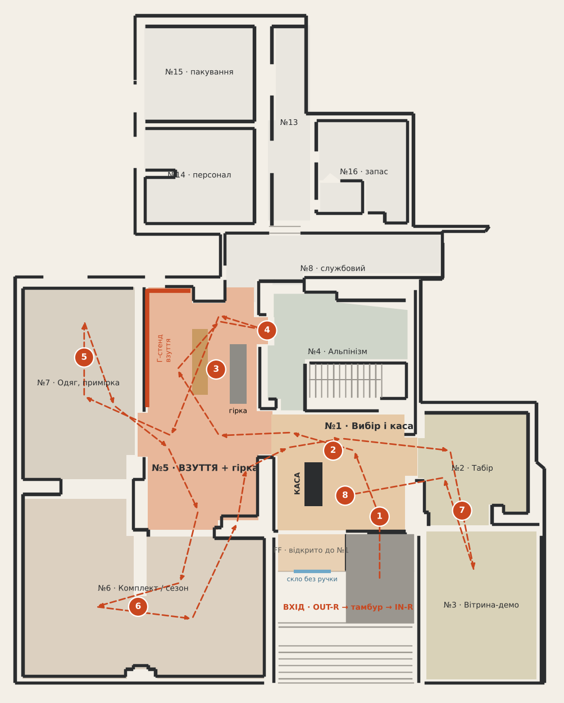

Куди рухаємось
Білі стіни, графітові стенди, дубові меблі й салатовий KULUAR лише на навігації. Магазин упізнається як родина KULUAR, товар на темних стендах виглядає яскравіше, а бюджет іде на те, що бачить покупець.
Це зведений варіант: найкраще зі Шляху 1 (як бачить замовник) і Шляху 2 (як радить дизайнер) з урахуванням відповідей замовника 23 листопада.
Палітра зведеного варіанту
Правило: стіни білі, усі настінні стенди графітові, світлий дубовий декор лише на окремо стоячих меблях (каса, гондоли, лави, книжкова шафа). У залах одягу графітові й стіни.
Порівняння зал за залом
Кожен рядок — одна зала. Шлях 1 і Шлях 2 показані вихідними рендерами. Праворуч — AI-візуалізація зведеного варіанту P3 від 25.11: матеріали, світло й товар опрацьовані нейромережею. Порівнюйте загальний образ; точну геометрію та дрібні деталі звіряйте з 3D-моделлю.
Як це може виглядати: AI-візуалізація №5
Нейромережеве опрацювання рендера зведеного варіанту P3. Це концепт матеріалів, світла й товару, а не фотографія виконаного магазину. Асортимент, написи та дрібні деталі потребують уточнення; інтерактивна 3D-модель цим оновленням не змінена.
Чому саме так: що з пропозицій замовника беремо, а що шкодить дизайну
| Пропозиція | Оцінка | Чому |
|---|---|---|
| Брендовий салатовий #8DC449, точково: таблички, вказівники, акценти | Беремо | Сильний хід: магазин впізнається як родина KULUAR. Мало кольору = кожна табличка помітна. |
| Салатовий яскраво на великих площинах (з анкети) | Шкодить | Великі площини кольору перебивають товар і швидко дешевшають. Це суперечить і власному коментарю замовника, тож лишаємо точково. |
| Стіни різні в різних залах | Беремо з правилом | Добре для навігації. Але лише два кольори: білий і графіт, плюс мармур. Світлі зали — білі стіни з графітовими стендами, зали одягу — повністю графітові. Більше кольорів — «клаптикова ковдра», головна слабкість нинішнього магазину. |
| Різні матеріали меблів у різних залах | Частково | Наявне гарне обладнання лишаємо — це правильно й економить бюджет. Нові меблі робимо однією родиною (світлий дубовий декор + чорний метал), інакше простір розпадеться на окремі магазини. |
| «Дуб» — колір, а не масив | Беремо | ЛДСП, HPL або фанера з дубовим декором виглядають так само на відстані покупця й у рази дешевші. |
| Не пастельні, не «бутикові» тони | Беремо | Тепле беже з Шляху 2 справді читається м’яко. Замінюємо на чистий білий і графіт: контрастніше, «технічніше», ближче до outdoor-магазину. |
| Бюджет 40 000 $, відкриття 20.01, без закриття | Реалістично, якщо скоротити обсяг | Це оновлення, а не будівництво з нуля: фарба, світло, навігація, каса, стіна «Все для ніг», релакс-зона, решта — наявне обладнання. Роботи зал за залом при працюючому магазині. |
Що вирішуємо на зустрічі
Шість рішень, без яких не рушити далі. Для кожного — варіанти, рекомендація дизайнера й чому.
Варіанти: Усе разом із ПДВ · без ПДВ · лише меблі й світло
Рекомендація: Вважати 40 000 $ повною стелею з резервом 10% на непередбачене.
Попередні оцінки були втричі більші. Від цієї цифри залежить, що міняємо, а що лишаємо.
Варіанти: Усе пристінне · частину · нічого
Рекомендація: Лишити все пристінне в робочому стані й перефарбувати в графіт. Нове робимо лише там, де без нього ніяк: каса, гондоли спортхарчування, стіна «Все для ніг», релакс-зона.
Це найбільша економія і найшвидший шлях до відкриття. Потрібні фото й кількість по залах.
Варіанти: Лише стенди · стенди й стіни в одязі · ніде
Рекомендація: Графітові стенди скрізь, графітові стіни лише в залах одягу й скелелазіння.
Два кольори стін тримають магазин цілим. У графітових залах треба більше світла на стінах.
Варіанти: Лише навігація · також меблі · також стіни
Рекомендація: Лише навігація, бирки, лінія-фриз і край гірки. Потрібен брендбук KULUAR і остаточна назва на вивісці.
Мало кольору — кожна табличка помітна. Навігацію й вивіску виготовляють найдовше, тож їх треба замовити першими.
Варіанти: Увесь магазин · перша черга · лише каса
Рекомендація: Перша черга: №1 каса, №5 взуття, релакс-зона, №6–№7 одяг і навігація по всьому магазину. Друга черга — №2–№4 і підвал-аутлет — у лютому.
Вісім тижнів зі святами, меблі виготовляють 3–5 тижнів, магазин не закривається.
Варіанти: Цього тижня · пізніше
Рекомендація: Обмір цього тижня. Далі один виконавець дизайну й одна людина, що приймає фінальні рішення.
Без обміру немає креслень і точного кошторису. Кілька паралельних виконавців уже породили плутанину.
Як рухаємось
План до відкриття, якщо рішення приймемо цього тижня. Найбільший ризик — новорічні свята у виробництві, тому замовлення меблів має піти до 7 грудня.
- Зустріч і рішення 1–6. Обмір. Фото й список наявного обладнання. Брендбук KULUAR.
- Фінальний дизайн ключових залів, креслення меблів, кошторис у межах 40 000 $. Замовлення меблів, світла й навігації.
- Виготовлення меблів. Фарбування й світло в залах першої черги поетапно, у неробочі години. Друк навігації.
- Монтаж меблів зал за залом, навігація, викладка товару, перевірка.
- Відкриття оновленого магазину.
- Друга черга: №2–№4 і підвал-аутлет.
До чого прийдемо 20 січня
Що буде в магазині
- №1: каса з дубових брусів, стіна з ліхтариками й аксесуарами, дві гондоли спортхарчування.
- №5: графітовий Г-стенд для взуття, гірка для примірки, стіна «Все для ніг» з дзеркалом і тумбою, двері «Службовий вхід».
- Релакс-зона між №5 і №6 з книжками й кавою, що за 15 хвилин стає лекторієм.
- №6–№7: капсули одягу, гондоли, три примірочні з лавою й дзеркалом.
- Одна навігація в кольорі KULUAR через увесь магазин.
- Наявне обладнання приведене до однієї системи: графіт і дубовий декор.
Що вже погоджено й не змінюється
- Один вхід через дві лінії дверей і тамбур.
- Сходи й чорний мармур банку зберігаються.
- Одна каса в №1.
- Суцільний Г-стенд взуття в №5, гірка для примірки.
- Двоє продавців одночасно.
- Магазин працює під час ремонту.
3D-моделі
Відкривається зведений варіант. Угорі вікна можна перемкнути на Шлях 1 (перший поверх або підвал) чи Шлях 2. Обертайте, обирайте зал, дивіться зсередини. Оновлено 23.11.
Анкета
Для тих, хто ще не відповідав. Подивіться розділ «Куди рухаємось» і дайте відповіді. Відповіді зберігаються в цьому браузері, тож можна повернутися пізніше. Наприкінці натисніть «Надіслати в Telegram» або «Скопіювати» й перешліть Ганні.
Переглянути текст відповідей
Архів
Усе, з чого виріс зведений варіант. Рішення тут уже не приймаємо.
Шлях 1 · як бачить замовник (Codex, 19.11): усі зали й план
Архівний Шлях 1 · B0.7 від 19.11. Сім інтер’єрних кадрів опрацьовано нейромережею 25.11; план і вид згори залишені вихідними. Це окрема версія, не зведений P3.
Палітра замовника:
Вихідні рендери каси, взуття, «Все для ніг», релакс-зони й №7 цього шляху — у лівій колонці порівняння вгорі. Тут — сім AI-версій інших видів і два вихідні плани. Нейромережа інтерпретувала деталі товарів та написи.
Список замовника по залах
Шлях 2 · рекомендація дизайнера (19.11)
Функції ті самі, що в Шляху 1. Дизайн мій. Рендери Blender, розміри орієнтовні до обмірів.
Одна лінія на одній висоті проходить через усі зали. Усе інше спокійне: світлий дуб, теплий камінь, графіт.
Каса, взуття, «Все для ніг», релакс-зона й №7 цього шляху — у порівнянні зал за залом угорі. Тут два додаткові ракурси.
Мої рекомендації
Порівняння Шляху 1 і Шляху 2 (таблиця)
Що однакове, а де дизайнер радить інакше і чому.
| Тема | Шлях 1 · замовник | Шлях 2 · дизайнер | Чому |
|---|---|---|---|
| Акцентний колір | Салатовий | Лишайниковий салатовий, лише лінією й бирками | Менше акценту — більше уваги товару. Колір стає знаком маршруту, а не фоном. |
| Стіни | Графітові або бежеві | Теплий камінь (світлий бежево-сірий) | Чорний мармур підлоги вже дає контраст. Світлі стіни роблять зали просторішими. |
| Дерево | Світле дерево | Світлий дуб, бруси на касі й лавах | Збігається з побажанням. Бруси — впізнаваний елемент мережі. |
| Треки й метал | Чорні | Чорні, на графітовій стелі | Однаково. |
| Навігація | Таблички | Одна лінія-фриз через усі зали з назвами зон | Покупець читає маршрут без зайвих вивісок. |
| №1 каса | Ліхтарики й аксесуари замість панелі з лініями, дві стінки спортхарчування | Те саме: перфорована дубова стіна, дві двосторонні гондоли | Функція замовника, форма дизайнера. |
| №5 взуття | Стіна для ніг, дзеркало, тумба зі шкарпетками, двері «Службовий вхід» | Те саме | Однаково. Місце дверей уточнити обміром. |
| Релакс-зона | Столик, диван, книжки, кава, окуляри, догляд | Те саме, усе на колесах | Зону легко прибрати під лекцію. |
| №7 одяг | 3 примірочні, лава, дзеркало, капсули, гондоли | Те саме; номери на примірочних, назви капсул на фризі | Однаково. |
Маршрут покупця
Петля без тупиків: від входу вглиб до взуття й гірки, назад через одяг до каси біля виходу.

- Вхід через дві лінії дверей і тамбур.
- №1: ліхтарики, дрібниці, каса, спортхарчування.
- №5: взуття, гірка, «Все для ніг», дзеркало.
- №4: скельне спорядження, стінка з зачіпками, палиці.
- №7: трекінг, хайкінг, alpine, утеплення, три примірочні.
- Релакс-зона й №6: капсули місто, трейл, біг; рукавички, шапки, Buff.
- №2: рюкзаки й посуд на полицях.
- №3: намети, спальники, килимки, бівачна вітрина.
Раунд 2 · чотири ідеї (7 листопада)
Раунд 1 · «Базовий табір» і «Топографія» (6 листопада)
Референси: магазини мережі
3D-модель першого раунду: відкрити.